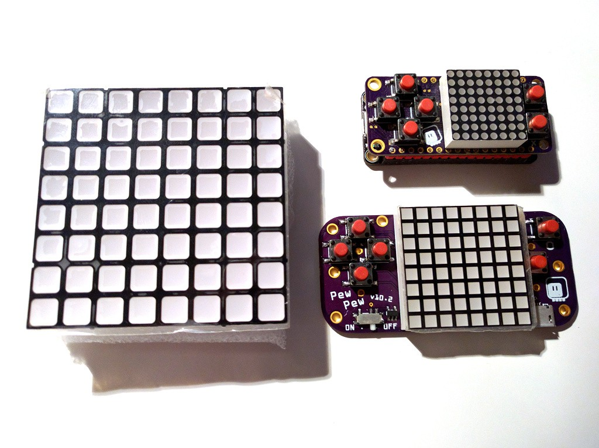
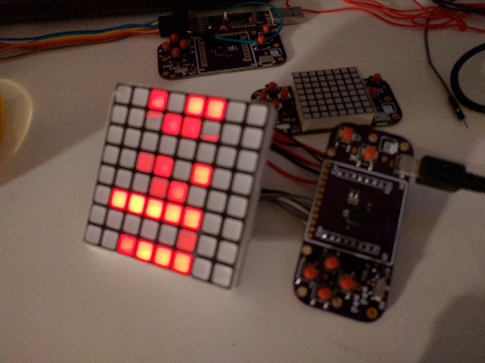

Bigger Matrix¶
Published on 2018-08-26 in PewPew Standalone.
So I found this nice 60×60mm matrix in my drawer:
(I think that I previously mentioned a bi-color matrix of similar size.) In any case, it’s a great temptation for designing a PCB for a bigger version of the PewPew. It would of course be more expensive (the matrix I’m using right now is a kind of sweet spot, being the cheapest and the easiest to source), but maybe it would make sense to have one like that during the workshop, so that the teacher can show things to the whole group from a distance. Whatever the justification, for now I just wired it to the small PCB with wires:
It works perfectly fine! I could even mount it in some kind of box, with the PCB with the buttons below it, to have a pretty convenient device. For now this is just an experiment, but it’s good to know that I could make such a big version. Maybe one day it will become a badge for some conference, who knows.